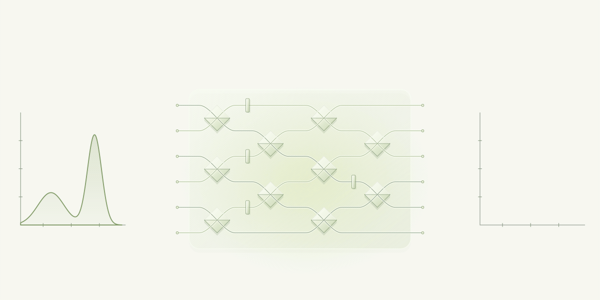

Where software
meets quantum
randomness
Making quantum
photonics
programmable.
The Quantum
Bernoulli Factory

Can you change the odds of a coin toss without knowing the original odds?
Toss a coin twice and count two heads as a win. If each toss lands heads with probability p, the chance of winning is p². That’s a simple Bernoulli factory.
Using qubits expands the range of probability transformations we can build.
QUFACT is building software to design and test these transformations on photonic hardware.
Project timeline
-
Quantum Bernoulli Factory demonstration
The research team demonstrated a modular Quantum Bernoulli Factory on an integrated photonic processor. The experiment showed how to transform probabilities encoded in photonic qubits.
-
2025–2026
POQUB proof of concept
The Sapienza-led ERC project focused on developing the photonic approach and identifying applications in blind quantum computing.
-
2025–2026
Boost Your Ideas and SpinOut!
Lazio Innova selected QUFACT for Boost Your Ideas. The team also presented the project at Rome Technopole’s SpinOut! Showcase.
-
TT Lazio admission
QUFACT was admitted to Get Ready, the first phase of Lazio Innova’s Technology Transfer Lazio programme. The phase focuses on potential applications, market validation, and intellectual property strategy.
Our team
Our scientific team connects quantum photonics with the craft of building software.
Fabio Sciarrino
Quantum computing and information
Nicolò Spagnolo
Benchmarking and control software
Taira Giordani
Quantum technologies
Valeria Cimini
Quantum machine learning
Giuseppe Antonio Di Luna
Computer scientist
Gonzalo Carvacho
Quantum randomness
Alessio Pascucci
Computer scientist